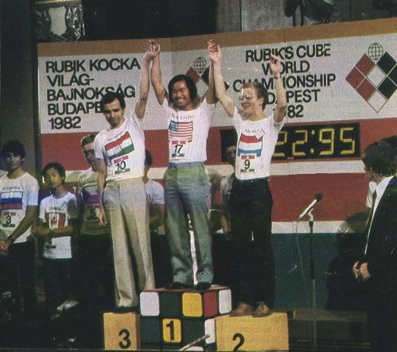

The same year on June 5, The First World Championship
in Rubik's Cube was held in Budapest in the Vigado Concert Hall. Total
19 speed cubists attended the event. The following countries were represented
at the championship:
| Austria | Josef Trajber | 25y | Computer Programmer |
| Belgium | Luc van Laethem | 25y | Student |
| Bulgaria | Svilen Tenev | 18y | Student |
| Canada | Duc Trinh | 14y | Student |
| Czechoslovakia | J. Fridrich | 17y | Student |
| Finland | Jari Sandqvist | 21y | Advertising Representative |
| France | Jerome Jean-Charles | 26y | Journalist |
| Great Britain | Julian Chilvers | 15y | Student |
| Holland | Guus Razoux Schultz | 17y | Student |
| Hungary | Zoltan Labas | 26y | Student |
| Italy | Guiseppe Romeo | 16y | Student |
| Japan | Ken'ichi Ueno | 18y | Student |
| Peru | Eduardo Valdivia Chacon | 21y | Student |
| Poland | Piotr Serbenski | 17y | Student |
| Portugal | Manuel Galrinho | 24y | Teacher |
| Sweden | Lars Petrus | 21y | Student |
| United States | Minh Thai | 16y | Student |
| West Germany | Roland Brinkmann | 17y | Student |
| Yugoslavia | Jozsef Borsos | 16 | Student |
|  |
|
I ended up in the exact middle with a baaad time 29.11. In my opinion, the championship had several severe flaws that mixed up the results and caused me to believe that not the best one won (I think that the Italian guy was the fastest among us - judging from practising behind the curtain). First, as any speed cubist knows, the cube is manufactured in two different colorings: white - yellow, red - orange, and green - blue, and the other coloring is: white - blue, red - orange, and green - yellow. Speed cubing requires a lot fast decisions for which one naturally uses colors. Being used to one coloring and given a cube with the other coloring makes the times longer. I was fortunate that the coloring of the cubes did match the one I was used to. But it probably did not match for others. Second, the cubes were really hard to turn and were not prepared for serious speed cubing. The organisors should have prepared well greased cubes and not a bunch of tools for excersizing finger musles! You can say: well, everybody was given the same (bad) cube - so what's the big deal? The big deal is that some guys used systems which use smaller number of moves, yet one needs to spend little more time thinking, while others used systems with very little delays between stages, but with a slightly larger number of moves. All in all, the best guys from both camps would be approximately equally fast. A hard-to-turn cube gave advantage to the first group. A lot better solution would be to let the competitors use their own cubes. It would not be that hard to label the cubes ...
It is also hard to accept Minh's time as the official
world record knowing almost a dozen of other guys who can solve the cube
consistently in a shorter time. It is a similar argument as claiming that
world records in track and fields can be counted only at Olympic games.
The fastest time I am aware of which has been achieved at an official championship
was achieved by Shotaro "Macky" Mackisumi.
He is probably one of the fastest cubers in the world.